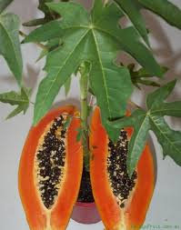
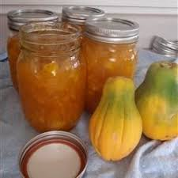

Papaya (Carica papaya) is a perennial fruit tree widely cultivated in tropical and subtropical climates for its nutritive and medicinal values. It is very popular in Kenya where it is grown for both local and export markets. Pawpaw is widely cultivated fruit tree in the tropics and subtropics. It is grown in Kenya as a domestic fruit and small-scale cash crop. The fruits are low in calories and rich in vitamins A, B1, B2 & C, iron and potassium. Papayas enzymes promote digestion easing constipation. Sale of fresh papaya provides regular income for farmers since the fruits are produced through out the year.
Pawpaw fruits are sold and eaten locally as fresh fruit, with high demand from the hotels, local grocery, fruit salad vendors, supermarkets and export market. The fruits are dried and exported as part of a dried fruit mixture. It can be used to make ice-cream flavour, refreshing drinks, jam, jelly, wine, marmalade, candies and crystallized fruits. The latex produced by the unripe fruit is harvested and used in the production of papain, used in the brewing industry, canned meats and pharmaceutical industries. Green fruits are pickled or cooked as a vegetable. Young leaves are sometimes eaten as vegetables.
